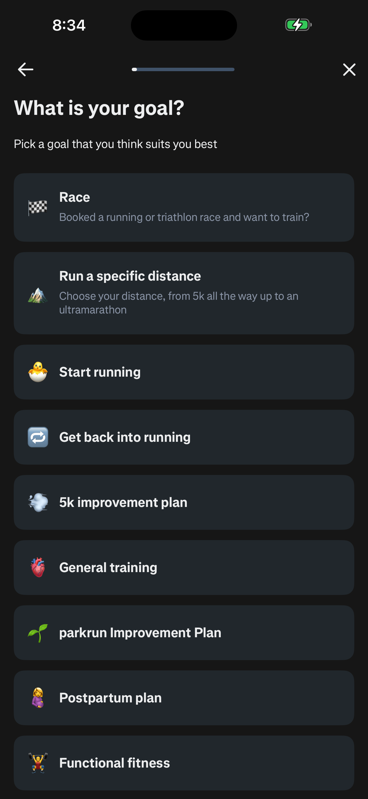
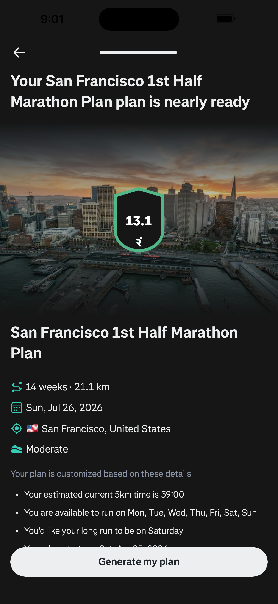
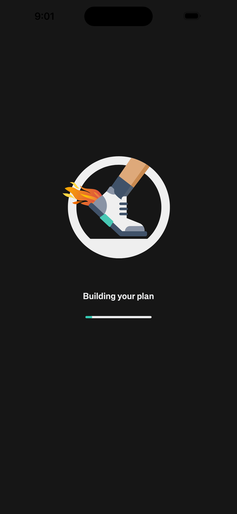
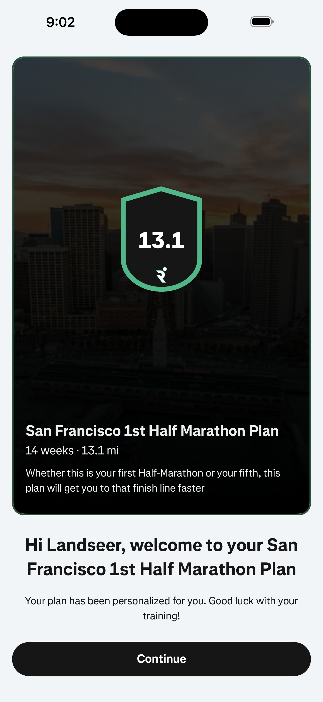
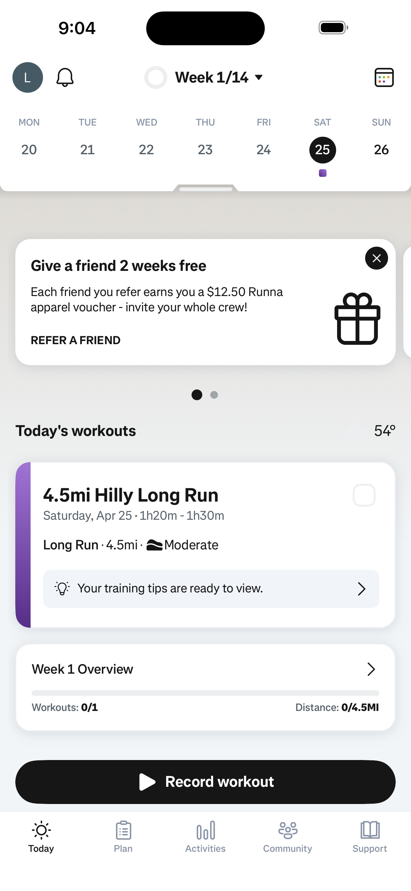
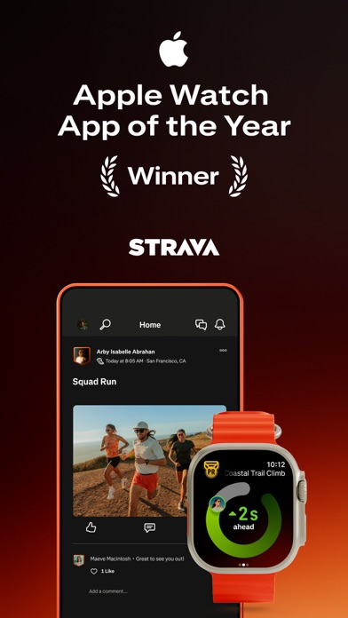
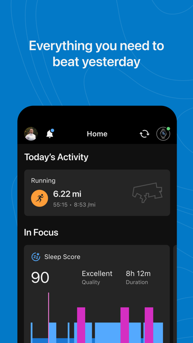
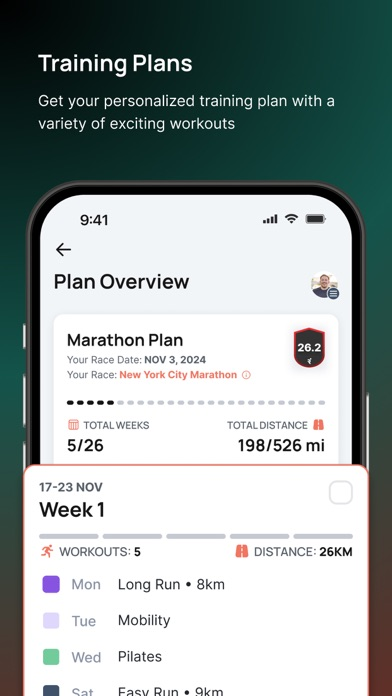

Design Research: Tempo Premium Onboarding
TL;DR
Tempo should move from generic setup flow to a coaching sequence:
performance setup -> plan briefing -> today activation.
The trust moment is Screen 5 (Plan Briefing): users must see a human timeline, phase model, Week 1 intent,
and editable controls before permission asks.
Top Recommendations
- Reframe onboarding as a coaching sequence, not a form wizard.
- Make Plan Briefing the main "aha": clear summary, phases, Week 1, and why-it-fits reasoning.
- Keep Apple Health sync after value and non-blocking.
- Replace quick tour with Today activation and immediate first session.
ASCII: Flow Arc
Welcome -> Goal -> Starting Point -> Building Plan -> Plan Briefing -> Health Sync (optional) -> Today's Briefing
Required 7-Screen Flow (Proposed)
| Screen | Intent | Key Copy / UI |
|---|---|---|
| 1. Welcome | Set confidence and direction | Know what to do next. + "How Tempo starts" 3-step card + Build my plan. |
| 2. Goal | Capture target with low friction | 2-column goal grid + Add detail input for race URL or free text. |
| 3. Starting Point | Calibrate first week safely | 5 progressive question blocks with chips; optional injury notes only when relevant. |
| 4. Building Plan Briefing | Show intentional computation | Animated checklist: reading goal, timeline, weekly load, first block, recovery space. |
| 5. Plan Briefing | Main trust and conversion moment | Plan summary card + Base/Build/Peak/Taper strip + Week 1 card + "Why this fits" + pre-start adjustments. |
| 6. Health Sync | Permission after value | Clear data purpose cards (Workouts/HR/Sleep/Steps/Weight) + Not now. |
| 7. Today's Briefing | Immediate execution | "Week 1 starts today" + today's session card + adjust controls + start CTA. |
Data and Logic Requirements
- Map modes:
conservative -> Conservative,balanced -> Balanced,aggressive -> Performance. - Format dates into human-readable timeline ranges (for example,
May 25 -> Oct 17). - Generate phase model for long plans: Base, Build, Peak, Taper.
- Persist onboarding state fields for goal, constraints, mode, health sync, completion flags.
Key Examples








Sources
- Revyl - Runna onboarding flow
- GrowthDives - Runna onboarding case study
- Lifecycle Architect - Fitness onboarding optimization
- Strava support - Health app integration
- Garmin manual - Training plans setup
- Runna App Store
- Strava App Store
- Garmin Connect App Store
Constraint: Lazyweb MCP was unavailable in this workspace, so this report uses web-captured references only.